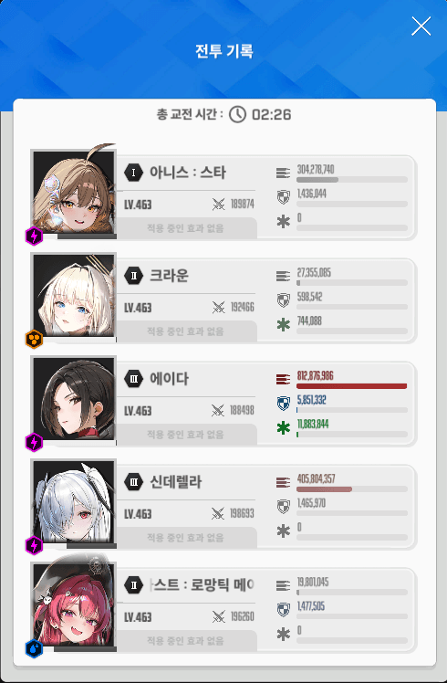
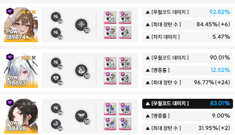

지금 이조합이 딜찍누 하기 제일 좋은 것같음
아니스 나오면서 아인보다 신데렐라가 더 나은듯
진짜 구두도 안부수는 딜찍누 조합이라 택틱은 크게 없음
에이다 선버이고 저지 전까지는 신데렐라에 마스트 몰빵하고 저지 이후에는 에이다에 마스트 몰빵임
에이다 마스트 한번 안줬는데도 죽은거 보면 에이다 있으면 딜찍누 대부분 될듯

딜표 보면 알겠지만 저지 이후 후반 딜 에이다 독박이라서 마스트 무조건 몰아줘야 함
아인 키웠는데도 신데렐라 택한 이유는 디코이 때문임 디코이가 막아주는게 엄청 컸음
아인 키운 사람들이 생각보다 적기도 할거고 신데렐라 디코이가 가져다주는 이점이 더 큰 것 같음
주요 니케들 스펙임

여기에 추가로 신데렐라는 공 15퍼 있고, 에이다는 공 14퍼임
텍스트로 설명한거 말고는 미컨 계속 팠던 니붕이들은 다 알것들이니까 영상 한번 보거나 바로 트라이 해봐도 좋을듯